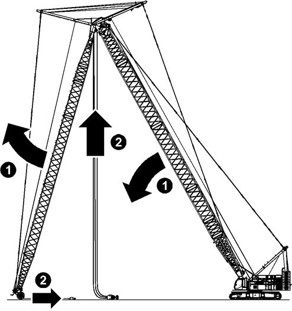

Hauptausleger und Nadelausleger bis auf Boden senken

GEFAHR
Gespannte Nadelausleger-Abspannstangen und Nadelausleger-Haltestangen!
Kippen der Maschine.
Sicherstellen, dass Nadelausleger-Abspannstangen und Nadelausleger-Haltestangen leicht durchhängen. |

GEFAHR
Gespannte Zwischenabspannung!
Kippen der Maschine.
Sicherstellen, dass die Seile der Zwischenabspannung leicht durchhängen. |
ACHTUNG
Hindernisse beim Ablegen des Nadelauslegers!
Beschädigung der Ausleger-Komponenten, Versagen der Struktur.
Sicherstellen, dass Nadelausleger beim Ablegen ungehindert nach vorne rollen kann. |

Fig. 5853: Hauptausleger und Nadelausleger bis auf Boden senken
Fig. 5853: Hauptausleger und Nadelausleger bis auf Boden senken
ACHTUNG
Kollision zwischen A-Bock2 und A-Bock3!
Beschädigung des A-Bock2 und A-Bock3.
A-Bock2 und A-Bock3 nicht vollständig zusammenfahren. |

Hauptausleger senken und gleichzeitig Nadelausleger heben. |
ACHTUNG
Unsachgemäßes Vorgehen beim Ablegen!
Beschädigung der Ausrüstung.
Lasthaken bzw. Unterflasche nicht am Boden nachziehen. |
Schlaffseil vermeiden. |
Seil der Winde1/Winde2 am Hauptausleger bei Bedarf aufspulen. |
Seil der Winde1/Winde2 am Nadelausleger bei Bedarf abspulen. |

Wenn Hubendschalter-Bügel am Boden liegt: | |
Taste Endschalter überbrücken am Steuerpult X23 drücken. | |
Hubendschalter sind überbrückt. |

Seilschutzvorrichtung an Nadelausleger-Kopf und Nadelausleger-Anlenkstück entfernen. |
Seil der Winde1/Winde2 von Nadelausleger lösen und aufspulen. |
Seil der Winde1/Winde2 von Hauptausleger lösen und zum Hauptausleger-Kopf zurückziehen. |
Seilschutzvorrichtung an Nadelausleger-Kopf und Nadelausleger-Anlenkstück wieder montieren. |

Wenn eine Seilführung 1 vorhanden ist: | |
Seil 3 der Winde1/Winde2 auf Seilrolle der Seilführung 1 legen. | |
Seil 6 der Winde1/Winde2 von Hauptausleger mit Seilschloss 5 an Gurt 4 von A-Bock2 3 befestigen. |
Seil 6 der Winde1/Winde2 von Hauptausleger spannen. |
A-Bock3 2 mit Nadelausleger-Verstellwinde absenken, bis Nadelausleger-Haltestangen am Nadelausleger aufliegen. |
Nadelausleger-Haltestangen von Grundseil 1 lösen. |
ACHTUNG
Unzulässiges Unterschreiten des Mindestmaßes der sichtbaren Kolbenstange der hydraulischen Rückfallstützen!
Beschädigung der Maschine.
Aufrichtvorgang des A-Bock2 rechtzeitig stoppen. |
Aufrichtvorgang des A-Bock3 rechtzeitig stoppen. |
A-Bock3 mit Nadelausleger-Verstellwinde nach vorne absenken. |

A-Bock3 2 mit Nadelausleger-Verstellwinde aufrichten. |
Grundseil 1 in Transportposition befestigen. |
A-Bock3 2 mit Nadelausleger-Verstellwinde absenken, bis hydraulische Rückfallstützen vollständig ausgefahren sind. |
ACHTUNG
Kollision der Seilrollen am A-Bock2 und den Nackenseilrollen am Hauptausleger-Kopf!
Beschädigung der Maschine.
Ablegevorgang des A-Bock2 rechtzeitig stoppen. |
A-Bock2 3 und A-Bock3 2 mit Seil 6 der Winde1/Winde2 von Hauptausleger aufrichten, bis Nadelausleger-Abspannstangen am Hauptausleger aufliegen. |
Nadelausleger-Abspannstangen von Grundseil 7 lösen. |
A-Bock2 3 und A-Bock3 2 mit Seil 6 der Winde1/Winde2 von Hauptausleger absenken, bis hydraulische Rückfallstützen nicht mehr belastet sind. |
Bolzen der hydraulischen Rückfallstützen an Hauptausleger-Kopf entfernen. |
A-Bock2 3 mit Seil 6 der Winde1/Winde2 von Hauptausleger aufrichten und gleichzeitig A-Bock3 2 mit Nadelausleger-Verstellwinde in Position halten, bis Auslegerabstützungen des A-Bock2 3 circa 20 cm (7.87 in) von A-Bock3 2 entfernt sind. |
A-Bock2 3 und A-Bock3 2 mit Seil 6 der Winde1/Winde2 von Hauptausleger absenken, bis A-Bock3 2 auf Nadelausleger-Anlenkstück aufliegt. |

Hinweis
Liebherr empfiehlt: | |
Mitgeliefertes Hilfsseil einziehen. | |
Seil der Nadelausleger-Verstellwinde ausziehen und aufspulen. |
A-Bock2 3 mit Seil 6 der Winde1/Winde2 von Hauptausleger absenken, bis A-Bock2 3 auf A-Bock3 2 aufliegt. |
Elektroleitungen entfernen und aufwickeln. |
Wenn Spitzenausleger angebaut ist: | |
Spitzenausleger von Nadelausleger-Kopf entfernen. | |
Nadelausleger-Komponenten und Nadelausleger-Haltestangen trennen. |
Nadelausleger-Anlenkstück abbolzen und von Hauptausleger-Kopf entfernen. |